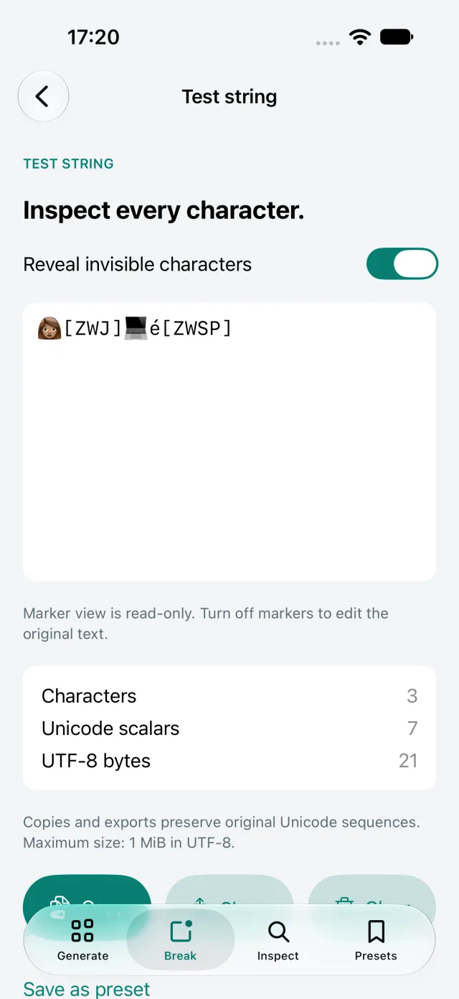

Reveal hidden Unicode
Compare characters, scalars, and UTF-8 bytes without changing the original text. Make invisible layout risks visible before they reach production.
Long text, emoji, right-to-left text, combining marks, whitespace, and zero-width characters stay close at hand.